Condiciones de lanzamiento de las instancias alumnos y profesor
Lanzar 2 instancias con las siguiente condiciones.
- AMI: Windows Server 2025 Base.
- Tipo de instancia:
m7i.xlargeot3.large. - Almacenamiento: 30GB.
- Zona de despliegue Configuración de red → pulsar el botón de editar y en subred buscar la subred 172.32.31.0/20.
- Configurar grupo de seguridad de la instancia.
- Reglas de entrada: Permitir todo el tráfico.
- Reglas de salida: Permitir todo el tráfico.
Cambiar nombre de las instancias a alumnos y profesor
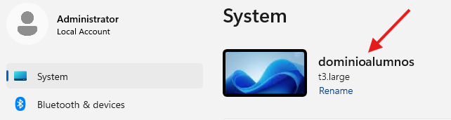
Configurar las instancias para que tengan IP fija y tengan como servidor DNS preferido al DNS del dominio ad.practicadns.es
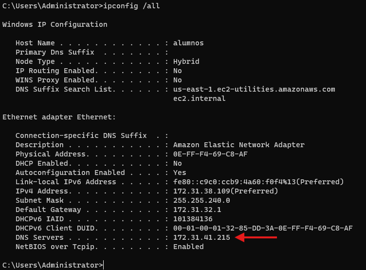
Añadir las instancias al dominio ad.practicadns.es
Estos pasos se deberán repetir en las 2 instancias
-
Accedemos al workgroup de la instancia.
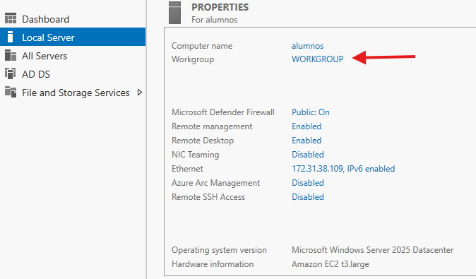
-
Seleccionamos cambiar el dominio o grupo de trabajo.
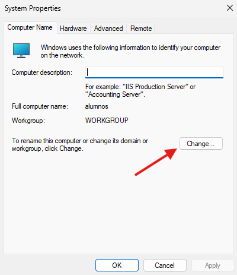
-
Indicamos el dominio al que queremos incorporar la instancia.
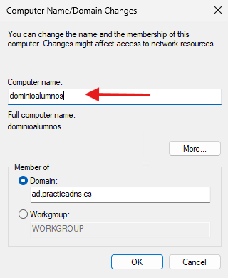
-
Introducimos la contraseña para
Administrator.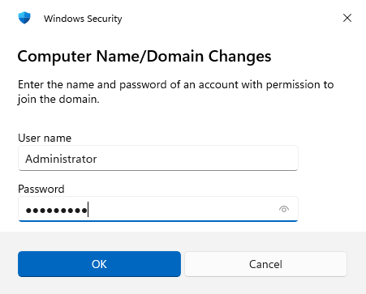
-
Si todo ha ido bien habremos añadido las instancias al dominio.
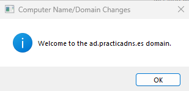
-
Para completar el proceso, debermos reiniciar la instancia.
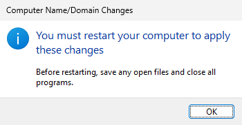
-
Si vamos a la instancia controladora del dominio
ad.servidordns.espodremos como la instancia ha sido incorporada al dominio.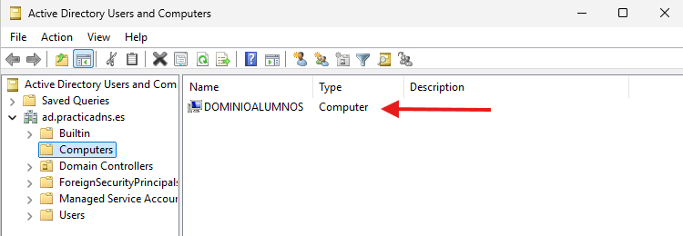
-
En la propia instancia, tambien podremos su pertenencia al dominio ´as.practicadns.es´.
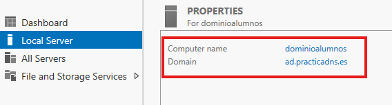
Roles AD DS + DNS a las instancias
Estos pasos se deberán repetir en las 2 instancias
-
Añadiremos los roles a nuestras instancias.
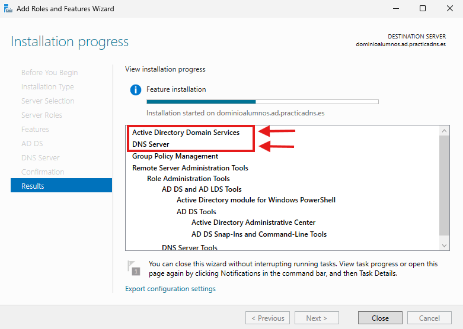
-
Luego promocionaremos la instancia a controladora de dominio añadiendo el dominio de la instancia al bosque existente.
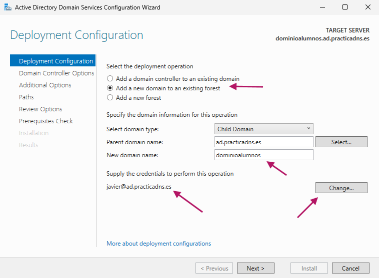
- Introducimos una contraseña de recuperación ante catástrofes.
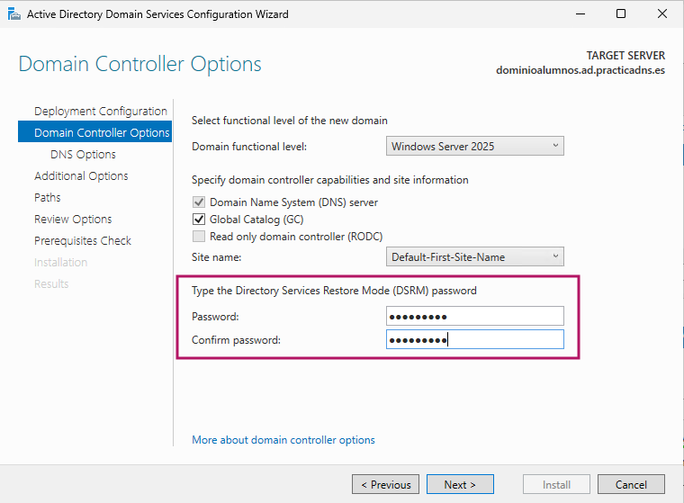
- Esperaremos a que se cargue el NetBIOS domain name.
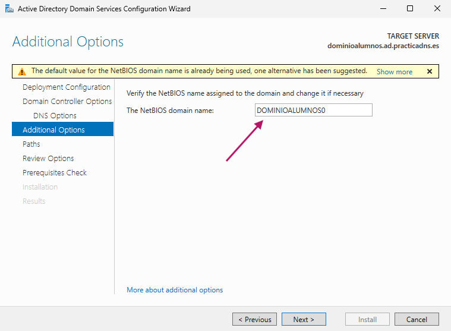
- Comprobaremos que no existan impedimientos graves para terminar la promoción de la instancia a controladora de dominio.
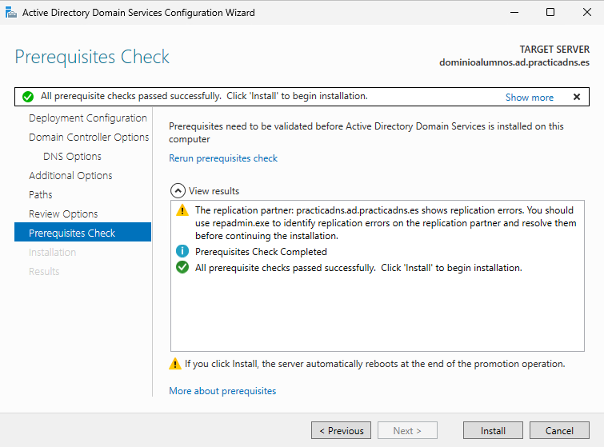
alumnos principal B)GfBWuQP$k?(3J9hgSXMFE%C50.-56f
1 - Crear instancia 2 - Cambiar nombre 3 - cambiar ip + dns preferido = dns instancia ad.practicadns.es 4 - agregar maquina al dominio ad.practicadns.es 5 - rol adds + dns 6 - promocionar.
- habilitar la transferencia de zona.
Habilitar las transferencias de zona en cada servidor primario. Autorizar únicamente las direcciones IP de los otros dos servidores DNS. Crear una zona secundaria en cada uno de los servidores receptores. Indicar la dirección IP del servidor que contiene la zona primaria.
ver la configuracion de los dns secundarios
https://www.youtube.com/watch?v=frPyRpW4rA8
https://www.youtube.com/watch?v=FCwQVKmPqgs
https://www.youtube.com/watch?v=parhWhC-iVE&list=PLZ6WzpdSeBGTW2vTnhTvdlgi-NFxixmdM&index=4